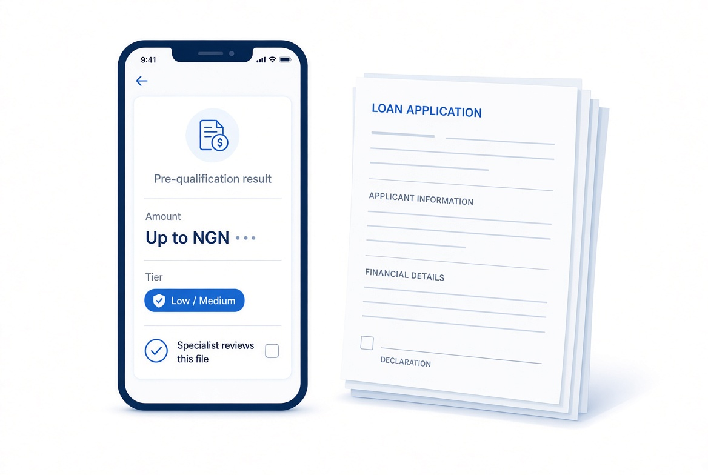

Dual-track onboarding
Individual and corporate paths. The corporate path collects CAC and two signatories — it is not the individual form with a new header.
Digital onboarding · Instant pre-qualification
Onboarding + scored loan files. Human still approves.
Your clients go from “Open an account” to a pre-qualified amount in about five minutes. Your officers open a scored file — not a blank PDF.

The problem
Most boutique desks still open accounts with a downloadable form and take loan enquiries through a rate calculator. Staff re-key. Files sit until Thursday. Officers start from a raw scan.
How it works
Individuals and companies walk the same short path. Both end with a signature and a result — not a “we will email you”.
Individual or corporate. Personal details, or RC number and two signatories. Progress saves as you go.
BVN and NIN checked against the identity register. Only the last four digits are kept.
Upload a government ID plus a statement — or paste three months of bank-alert SMS.
Sign on the screen. FastTrack reads the statement, applies the firm’s rules and returns a result.
Pre-qualification result
Up to NGN 1,240,000 Elevated review
Example from the demo persona “Adaeze”. A pre-qualification, not an offer of credit — a specialist reviews every file.
Product
Built for private-client and SME ticket sizes, not payday lending. Every feature exists to put a complete file in front of a decision.
Individual and corporate paths. The corporate path collects CAC and two signatories — it is not the individual form with a new header.
Reads a PDF statement or pasted GTBank, Access, Zenith, UBA or FirstBank alerts into income, spend and existing repayments.
Amount and risk tier come from your policy file — income multiple, caps and haircuts. Change the multiplier in a meeting.
A queue with filters, a file with documents, extract, narrative and notes — and approve, more-info or decline in one click.
ID, statements, CAC and signatures land in private storage under the applicant’s ID. Short-lived links. Nothing is emailed.
Sign with a finger or mouse; the legal name and timestamp sit under the stroke. No courier, no printer.
For loan officers
Every morning starts with a queue, not an inbox. Each file shows the rules-engine amount, the risk tier, the warnings that matter and a short narrative — with the original documents one click away.
Security & honesty
One app for applicants on Android and the web. Officers use the same web app at /officer.
Pilot build · sandbox identity checks · seed data for demos
FAQ
No. It is a pre-qualification based on the firm’s lending rules. A specialist reviews every file, and any offer comes with its own documentation.
A person. FastTrack prepares a complete, scored file so the loan officer can decide quickly. The software never approves a loan on its own.
Not in this pilot build. Identity checks run against a sandbox register and the app says so on screen. Going live means the firm contracts a licensed verification provider.
A government ID and either a 3–6 month bank statement or three months of bank-alert SMS. Companies also upload a CAC certificate and add two signatories.
Into private storage linked to your application. They are not emailed, links to them expire within minutes, and you can ask for your data to be deleted.